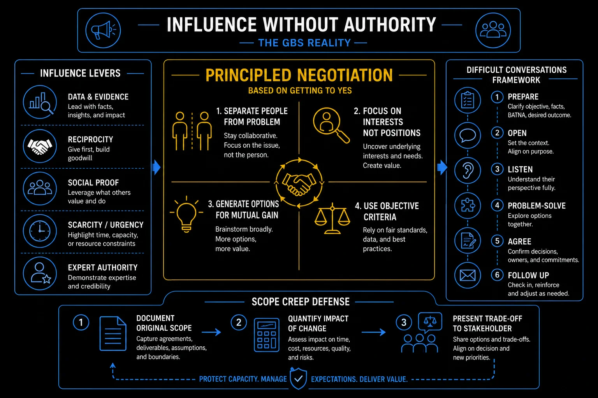

Pillar 4 · Cluster 3
Negotiation and influence without formal authority
GBS professionals rarely have direct authority over the stakeholders they serve. Influence, negotiation, and structured persuasion are the tools that bridge the gap between what you need and what you can mandate.
Sound familiar?
Topic 01 · Negotiation Framework
Interest-based negotiation — Getting to Yes
Positional bargaining trades demands. Interest-based negotiation solves for what each side actually needs — and finds room positions hide. The model is in THE FIX.
They said 24 hours.
They needed something else.
 K
KA business unit demands 24-hour turnaround. Klaudia’s team runs at 48. Deadlock.
Instead of arguing the number, she asks what drives it.
The answer: one weekly management report needs three specific items early. The rest can wait.
"You do not need everything faster. You need three things Thursday."
She feels unburdened — the impossible demand just became a small one.
You negotiate the stated position and never discover the smaller need behind it.
Behind every position sits an interest — and interests have more solutions.
The deadlock dissolves in one meeting. Both sides win — because the real problem was smaller than the stated one.
Interest-based negotiation in depth — Getting to Yes
Positional bargaining creates winners and losers. Interest-based negotiation finds solutions that address what both sides actually need, not what they initially demand.
The core shift is from positions to interests. That is what lets you find solutions neither side considered.
- The "Getting to Yes" framework (Fisher and Ury, Harvard Negotiation Project) is the standard for professional negotiation in business environments.
- A position is rigid and creates deadlock: "I need three more headcount."
- An interest is flexible and creates options: "I need to handle 40% more volume without missing SLAs."
- When you understand what the other side actually needs, not what they are asking for, you can often find solutions that neither side considered.
- Separate people from the problem — attack the issue, not the person; acknowledge emotions without letting them drive decisions
- Focus on interests, not positions — ask "why" behind the demand to uncover the real need
- Generate options for mutual gain — brainstorm multiple solutions before evaluating any of them
- Insist on objective criteria — use benchmarks, market data, precedent, and standards rather than willpower to resolve differences
Interest-based negotiation — positions vs interests
Next demand you receive, ask: "What drives that number?" Negotiate the answer, not the demand.
Interests solve deadlocks. Influence moves projects with no authority at all.

Influence without authority: principled negotiation, influence levers, and scope creep defense
Topic 02 · Organizational Influence
Leading without authority — influence maps
When you cannot mandate, you influence. An influence map shows who decides, who shapes the deciders, and where to invest. The model is in THE FIX.
No direct reports.
The project still has to move.
 P
PPriya’s migration needs five teams to change how they work. None report to her.
Emails go unanswered. Meetings get postponed.
She maps the room instead: who decides, who do the deciders listen to, who loses what.
"The decision maker was never my problem. The person he trusts was."
She feels strategic for the first time in the project.
You push the org chart while the real influence flows through a different map.
An influence map answers three questions.
One coffee with the trusted advisor moves more than six steering emails. The project regains speed without a single mandate.
Leading without authority in depth — influence maps
When you cannot mandate, you must influence. Influence maps help you identify who matters, who holds informal power, and where to invest your relationship-building effort.
An influence map shows you who to convince, in what order, and through which channels.
- It charts the stakeholders relevant to a decision, their positions (supportive, neutral, resistant), their power level (formal authority, informal influence, resource control), and their connections to each other.
- For GBS professionals trying to drive process changes, secure project funding, or introduce new tools, influence mapping reveals who you need to convince, in what order, and through which channels.
- Identify all stakeholders affected by or involved in the decision
- Assess each stakeholder's position: champion, supporter, neutral, skeptic, or blocker
- Map formal authority (reporting lines, budget control) and informal influence (respected opinion, network centrality)
- Identify relationships between stakeholders — who influences whom
- Prioritize your engagement: convert skeptics with influence, reinforce champions, neutralize blockers through their trusted peers
- The person who signs the approval is not always the person who makes the decision. Influence maps reveal the informal decision-makers who shape outcomes before the formal process begins.
- In GBS, the most common influence failure is going straight to the top without building ground-level support first. Senior leaders check with their teams before deciding — make sure those teams are already aligned.
Influence without authority — the GBS leadership skill
Draw the map for your stuck initiative: decides, shapes, loses. Invest in the "shapes" column first.
Influence gets you the meeting. Minto wins it.
Topic 03 · Executive Persuasion
Presenting to senior leadership — the Minto Pyramid
Executive presentations fail as narratives. The Minto Pyramid leads with the answer, then groups the reasons beneath it. The model is in THE FIX.
Ten minutes with executives.
Spend none of it on background.
 P
PPeter’s first leadership presentation: history, context, methodology — answer on slide 9.
The meeting ends at slide 6. No decision.
A director’s advice afterward: "Start where you ended."
"Slide one is the answer. Everything else exists in case they ask."
He feels rewired — the story was upside down.
You build to the conclusion. Executives start from it — or leave before it.
The Minto Pyramid stacks the message answer-first.
His next ten minutes: answer, three reasons, decision taken in the room. Slides 4 through 9 never open — and that is the win.
The Minto Pyramid in depth
Executive presentations fail when they are structured like narratives — building from background to conclusion. The Minto Pyramid inverts this: start with the answer, then prove it.
The governing thought
State your main message in one sentence — your recommendation, conclusion, or key insight.
- →It goes first, not last.
- →If the executive reads nothing else, they should know what you want them to do.
Key supporting arguments
Group your evidence into 2-4 mutually exclusive, collectively exhaustive (MECE) categories. Each argument should independently support the governing thought.
Supporting evidence
Under each argument, provide the data, examples, and analysis that prove the argument. This is where your detailed work lives — but only what is necessary to prove the point.
The ask
Close with the specific decision, approval, or action you need. Include the timeline. Make it impossible for the audience to leave without knowing what you expect from them.
- Starting with methodology — executives do not care how you did the analysis; they care what you found
- Too many slides — a 30-minute slot needs 8-10 slides maximum, not 40
- Reading from slides — slides are visual aids, not a script; speak to the audience, not the screen
- No contingency — if you get interrupted at slide 3 (you will), can you still deliver your core message?
- Weak close — ending with "any questions?" instead of "I recommend X, and I need your decision by Friday"
Restructure your next presentation: answer on slide one. Move all background behind the reasons.
Pillar 4 complete. You can move the room — Pillar 5: now move your career.
Reference
Glossary
Full glossary at the GBS Insider Club Field Guide.
- Fisher, Roger and Ury, William — Getting to Yes: Negotiating Agreement Without Giving In, Penguin, 1981
- Minto, Barbara — The Pyramid Principle, Pearson, 1987
- Cohen and Bradford — Influence Without Authority, Wiley, 2005
- Harvard Business Review — The Art of Leading Without Authority, 2024
Knowing the frameworks is the entry ticket. Applying them — visibly, at your actual job — is what gets you promoted.
The GBS Insider Club Career Paths turn this theory into a guided 90-day program for your role: self-assessment, practical exercises, templates, and Julian's unfiltered practitioner playbook.
Explore the Career Paths → Back to Stakeholder Communication